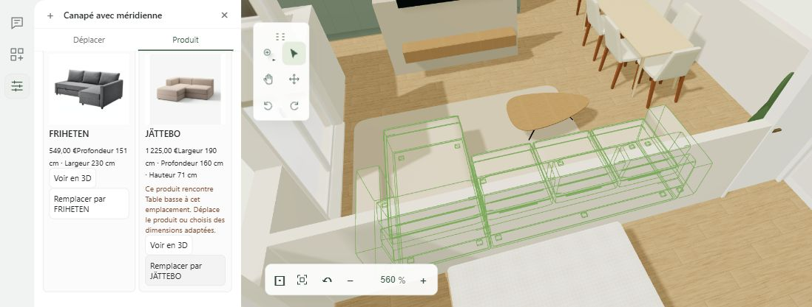
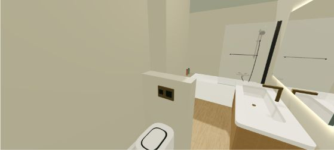
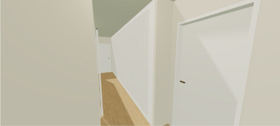
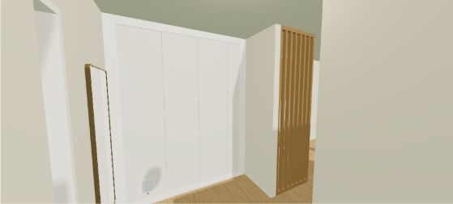
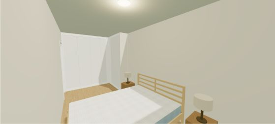
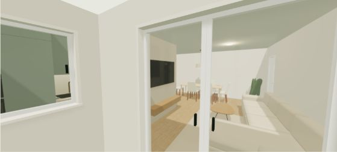
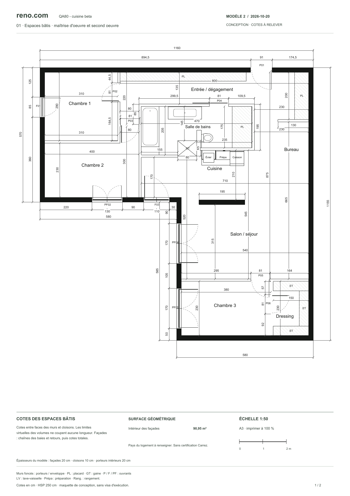
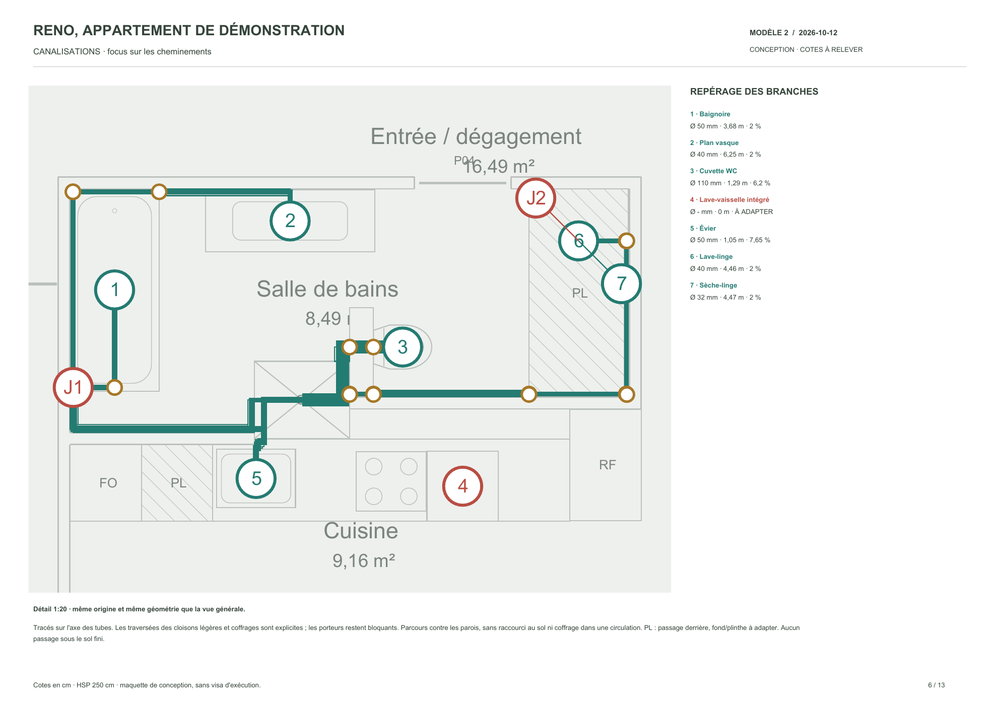

Several views, one project
The floor plan, architectural view and walkthrough offer complementary perspectives on the same spaces. Users can compare a proposed layout with its dimensions and how it feels in three dimensions.
PERSONAL PROJECT · 3D & interior planning
Draw and understand a space, explore layouts, walk through it in 3D and create visuals that help you imagine living there. reno.com brings floor plans, home configuration, AI renders and design documents together in one application.
reno.com supports an interior planning project from the floor plan to its visual presentation. Users organise spaces, position fixtures, compare materials, explore their home in 3D and save useful views. An AI rendering service turns a scene capture into a more realistic image to help discuss the look and feel.
Plan mode shows rooms, walls, openings and dimensions. Reference markers and measurement tools help users understand the space before choosing a layout.
Archi view lets users examine volumes, select an object and adjust its available settings. The scene reflects changes to placement and materials.
Walkthrough mode reveals sightlines and movement through the interior. Camera and movement controls provide a different perspective from the floor plan.
A snapshot is saved to the album with its camera, material, lighting and layout settings. This reference remains linked to the settings used when the image was captured.
From a saved photo, the user explicitly chooses to send the image and its context to the rendering service. The image editing API produces a photorealistic interpretation, saved as a variant of the source.
Users can find their saved views and export design documents. Dimensioned plans, floor areas and drainage documentation provide a clear basis for explaining the project and preparing its review.
The floor plan, architectural view and walkthrough offer complementary perspectives on the same spaces. Users can compare a proposed layout with its dimensions and how it feels in three dimensions.
A lightweight 3D scene is enough to compose a view. AI rendering enriches textures, lighting and atmosphere to help discuss design choices, without requiring users to create a professional render themselves.
The original image and its settings remain associated with the variant. The service uses the captured state, even if the scene has since changed. The original remains available for comparison.
2D documents make dimensions and layouts accessible outside the application. The downloadable examples show the readability and level of detail of the exports.
Generation runs through the server, with access and budget controls. Repeat requests are controlled, and an uncertain response does not automatically trigger another charge.
In Archi view, selecting the sofa opens its settings and available variants. Users can explore the options and see their effect on the layout while keeping an overview of the space.

FROM SCENE TO ATMOSPHERE
These five image pairs come from reno.com's album. Starting with a 3D view, the “Pinterestiser” action creates an AI render to explore materials, lighting and atmosphere. Select a room to compare the source with its render.





The application saves the photo and its settings, then the server sends that reference to an image editing API. The result is linked to the source in the album. A live test of this integration was documented during development. The floor plan remains the reference for dimensions, because the generator may interpret some details.
PROJECT DOCUMENTS
This French-language PDF is an export from the application. It presents the demo apartment with a dimensioned plan, volumes and floor areas, providing a clear basis for discussion.

This export shows a demo variant. It is a design document and has not been approved for construction.
INTERIOR PLANNING AND TECHNICAL CONSTRAINTS
Moving a kitchen or bathroom also means understanding how wastewater will reach the drain. reno.com makes these constraints visible through pipe routes, lengths, slopes and connections. The diagram helps users identify clashes with building elements and points that need a design decision.
This view helps users compare a layout idea with the building's constraints, then prepare a focused discussion with a professional. The documentation distinguishes gravity drainage branches from a pumped appliance connection. It keeps unresolved points visible instead of presenting every route as approved.

Extract of pages 5 to 13 from an export dated 12 October 2026. The header has been anonymised. Technical data and original page numbering are preserved. This design document supports review by a professional.
AI renders help convey a look and feel, but may interpret some details. The floor plan remains the reference for dimensions. The PDFs shown are design documents exported from a demo variant and have not been approved for construction.
I design and develop this application with AI assistance, connecting a geometric model, configuration tools, 3D visualisation and rendering services. My work covers consistency between views as well as controls, saving variants and preparing exports.
Making layout choices easier to understand and discuss. The floor plan defines dimensions, the walkthrough reveals volumes, and AI rendering helps convey the look and feel. Exported documents make the project easier to share.